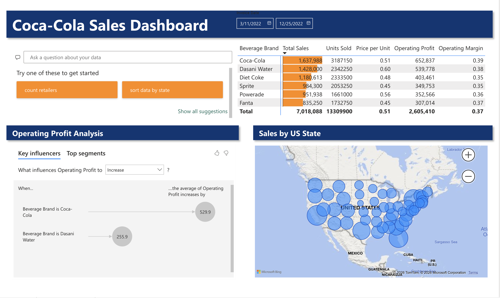

Coca-Cola sales dashboard in Power BI
A screenshot of the dashboard appears on this page when the image file is added to the site.
The question
Which beverage brands and states drive sales and operating profit?
- Sales data
- Map, brand table, key influencers
- Date slicer and Q&A
- Interactive Power BI dashboard
What I did
- Loaded a sales dataset with state, beverage brand, total sales, units sold, price per unit, operating profit, operating margin, and invoice date.
- Built a map of total sales by state, sized by sales.
- Built a table by brand showing total sales, units sold, price per unit, operating profit, and operating margin side by side.
- Added a key influencers visual to see which brands explain differences in operating profit, and a Q&A visual so viewers can ask questions in plain language.
- Added a date slicer so the whole dashboard can be filtered by invoice date.
Results

Tools
- Power BI
Skills shown
- Dashboard design
- Data visualization
- Key influencers analysis
- Interactive filtering
- Business reporting